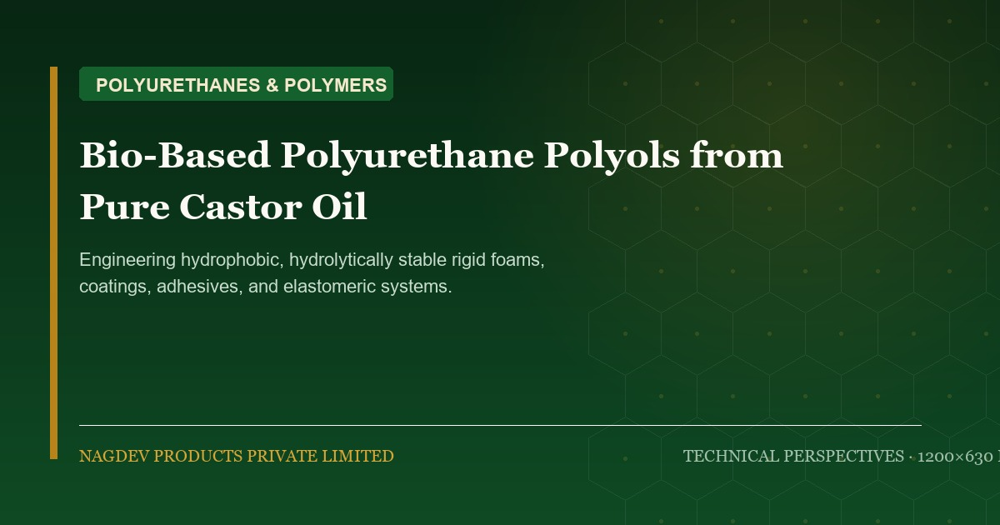

Bio-Based Polyurethane Polyols from Castor Oil: Next-Generation Automotive & Insulation Solutions

Polyurethanes represent one of the most versatile polymer classes globally, spanning automotive seating, thermal building insulation, wind turbine coatings, and sports footwear. Traditionally dependent on petroleum polyether and polyester polyols, the polyurethane industry is shifting rapidly toward bio-based polyols derived from pure castor oil.
1. The Innate Polyol Architecture of Castor Oil
Most natural vegetable oils (such as soybean, sunflower, or rapeseed) contain only unsaturated hydrocarbon chains without native hydroxyl groups. To convert them into polyols, chemical manufacturers must perform multi-stage epoxidation followed by ring-opening, introducing secondary hydroxyl groups and residual reactive impurities.
Castor oil, however, is a naturally occurring trifunctional polyol. Each triglyceride molecule carries an average of 2.7 hydroxyl groups directly positioned on the hydrocarbon chain. This gives castor oil unique physicochemical benefits:
- Hydrophobic aliphatic fatty acid chains: Imparts remarkable water repellency, corrosion protection, and hydrolytic stability to the finished polyurethane matrix.
- Uniform molecular weight distribution: Prevents low-molecular-weight plasticizer migration in automotive interior cabin parts.
- Low glass transition temperature (Tg): Imparts flexibility and impact resistance across cold temperature extremes down to -40°C.
2. Performance in CASE Applications (Coatings, Adhesives, Sealants, Elastomers)
When reacted with aromatic or aliphatic diisocyanates (such as MDI, TDI, or HDI), castor-based biopolyols form polyurethane elastomer networks with outstanding resistance to hydrolysis, saline mist, and electrical tracking.
| Application Sector | Key Technical Demand | Castor Biopolyol Advantage |
|---|---|---|
| Automotive Acoustic Foam | Low VOC, low fogging (DIN 75201) | No volatile petrochemical monomers; low emissions score |
| Electronics Encapsulation / Potting | Dielectric breakdown strength & moisture barrier | Hydrophobic backbone prevents moisture ingress and short-circuits |
| Architectural Floor Coatings | Thermal shock resistance, impact toughness | Polyurethane-concrete hybrid floors resist hot wash-down cycles up to 120°C |
| Cold Storage Insulation Panels | Low thermal conductivity (λ-value) & flame resistance | Rigid cross-linked urethane foam with closed-cell uniformity |
3. Nagdev Products: Partnering for Circular Oleochemistry
Nagdev Products produces tailored Bio-Polyurethane Polyols with controlled hydroxyl values (140 to 180 mg KOH/g) and low moisture content (< 0.05%), enabling seamless drop-in substitution in existing polyol B-side blends. Contact our engineering team for sample evaluations and formulation co-development.
Formulating with Castor Derivatives?
Our technical team in Banaskantha, Gujarat provides batch samples, certificates of analysis (CoA), and custom specifications for global formulators.